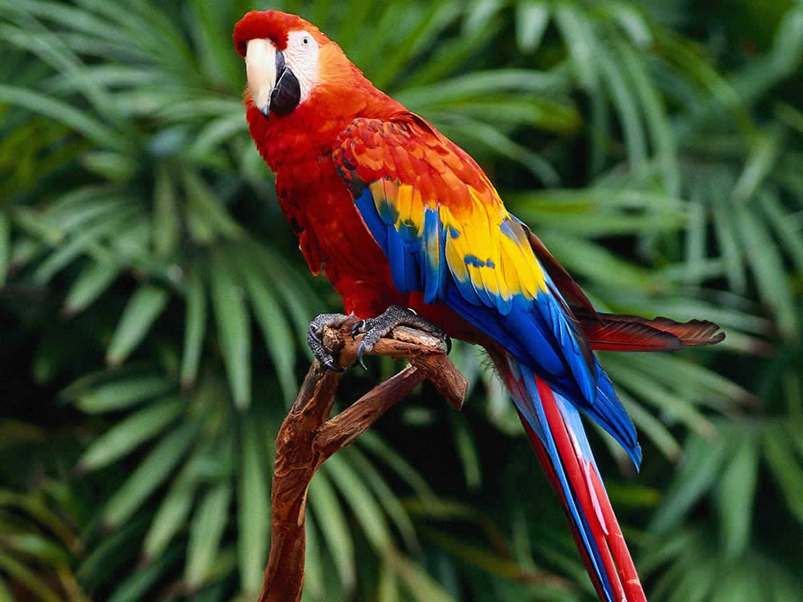
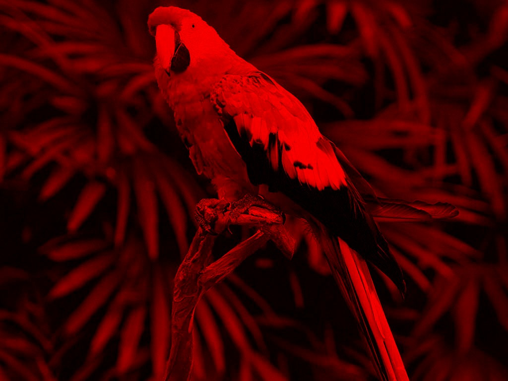

In this section we list the major modifications to this document, or in the starter code that is linked below.
Special rules that apply to the submission of the assignment will be posted here in a date closer to the submission date.
In this project, you are going to develop a powerful image transformation machine that you can use to extend the popular photo sharing and social network application Instagram.
Your mission is to develop a series of image transformations, using the C programming language, and integrate them with the code provided together with this assignment.
We provide a starter code for the application that consists in a virtual (stack) machine that runs small Instakilo programs based on a set of primitive operations, and assembly language for image processing. The starter code provides the stack machine and some base operations, your mission is to extend the machine with new operations.
You will submit the stack_machine.c file via Mooshak. Around 80% of the grade of your group is automatically assigned by Mooshak by testing programs written in the image processing assembly language. The remaining 20% is assigned manually by the teacher, who analyses the quality of your code.
To compile your module, Mooshak uses the command make using the given Makefile, and calls the main file with a series of input programs.
It is not mandatory to develop this project in Linux. However, you should test the final version of your module in the laboratories because the official environmental for this project is the Linux version installed in the laboratories.
It is also recommended you develop the project in Eclipse using a Makefile C project but, of course, this is also not mandatory.
zip archiveHere is the provided zip file: instakilo.zip. Note that is contains a starter version of the file stack_machine.c.
instakilo/
|- assignment.md
|- include/
| |- libppm.h
| |- ligimg.h
| |- instakilo.h
| |- insta_utils.h
| |- image_stack.h
| |- stack_machine.h
| \- test_instakilo.h
|
|- src/
| |- main.c
| |- libppm.c
| |- ligimg.c
| |- instakilo.c
| |- image_stack.c
| |- stack_machine.c
| \- test_instakilo.c
|
|- images/
| |- baboon.ppm
| |- castle.ppm
| |- fighter.ppm
| |- lena.ppm
| |- parrot.ppm
| |- plane.ppm
| \- space.ppm
|
|- scripts/
|- ...
To avoid using external libraries, we will work with a simplified image format, called ppm. If you are curious, the format can be found here, and a tool called convert is usually available in Linux and Mac OS x machines, and can be found in tool packages like image magick.
We also use some images that are classics of image processing community, which are public domain for image processing purposes (site).

A stack machine is one of the simplest execution models for a computer, it is based on an execution stack where operation arguments are fetched from, and the results are pushed onto. The Java virtual machine (JVM), and the .NET virtual machine (CLR) are examples of stack machines. Refer to the lecture #14 for a summary. But basically, a program like:
push 1
push 2
add
starts from any stack contents, and ends with that same stack with a new value resulting from the addition of 1 and 2, which is 3.
In this assignment you will receive working stack machine that manipulates images, and will have to complete it with a few more operations.
Now we give a series of examples of the assembly language of the instakilo stack machine, of each one of its operations and the corresponding results. The instakilo executable that you will be able to make with the contents of the provided zip archive accepts as argument the name of a file containing a script for a stack machine. For example, file scripts/example1.ppl contains:
load images/baboon.ppm
bw
store output/res1.ppm
Loads the baboon image onto the stack, applies the black and white operation bw to the image and stores the result into the file output/res1.ppm.
Another operation that is included in the starter code is the sepia filter. The second example scripts/example2.ppl:
load images/lena.ppm
sepia
store output/res2.ppm
Stack machine operations work by taking their arguments from the stack (images in this case), applying their effects to them, and them pushing the results back onto the stack. For example, scripts/example3.ppl:
load images/parrot.ppm
green 1024 768 65535
blue 1024 768 65535
add
negative
mask
store output/res3.ppm
isolates the red component of the parrot image and presents only the green and blue layers. Can you find out how?

We next describe the operations that are both provided and required to complete the assignment, and after that we explain the implementation that can be used as base to integrate new operations on the starter code provided.
The main loop of the stack machine is implemented in file stack_machine.c and makes use of helper functions present in the same file. These helper functions then make use of special functions paint_image, combine_image, and copy_image present in file instakilo.c.
All the machine is based on the data representation of an image, defined in file libimg.h which is quite simple:
typedef uint16_t color_field;
#pragma pack(push, 1)
typedef struct
{
color_field r;
color_field g;
color_field b;
} pixel;
#pragma pack(pop)
typedef struct
{
size_t width, height;
pixel *pixels;
} image;
Each image contains elements that indicate the dimensions of the image (width and height), and a series of pixels, composed by three 16 bit unsigned integers, packed with no alignment padding, as noted by the pragma directive #pragma pack(push,1). Notice that the matrix that corresponds to the image is linearised in the input file and in memory (with a small detail when treating little endian file representations).
Function paint_image below traverses the image with a (pointer) cursor and calls a function passed as argument to process each of the pixels. The contract with the function is that the pixel should be modified in place, and that other arguments (img, i, and j) can also be used as reference. The result is the same allocated image.
/*
* function: paint_image
* --------------------------------------------------------
* returns the image provided as argument, modified by the
* function also given as argument.
* --------------------------------------------------------
* img: the target image
* f: the painting function
* --------------------------------------------------------
* pre: img != NULL && f != NULL
* post: res == img
*/
image *
paint_image (image *img, pixel_set f)
{
pixel *pt = img->pixels;
for (size_t j = 0; j < img->height; j++)
{
for (size_t i = 0; i < img->width; i++)
{
f (img, pt++, i, j);
}
}
return img;
}
Using this function we can implement many operations on one single image, for instance operations bw and sepia given in the starter code are implemented by the following function call:
image *img1 = image_stack_peek ();
image_stack_pop ();
paint_image (img1, bw_pixels);
image_stack_push (img1);
where img1 is a pointer to an image, taken from the stack, and whose result (the same allocated object) is pushed back. The function bw_pixels used as argument is the following:
void
bw_pixels (image *img1, pixel *p, size_t i, size_t j)
{
color_field c = (3 * ((int) p->r) + 2 * ((int) p->g) + (int) p->b) / 6;
p->r = p->g = p->b = c;
}
which reaches a grey level by a weighted mean of the values for red, green and blue of the original pixel. The same happens with the filter sepia, by using the function sepia_pixels instead.
void
sepia_pixels (image *img1, pixel *p, size_t i, size_t j)
{
p->r = min_color (__COLORS,
((double) p->r) * 0.393 + ((double) p->g) * 0.769
+ ((double) p->b) * 0.189);
p->g = min_color (__COLORS,
((double) p->r) * 0.349 + ((double) p->g) * 0.686
+ ((double) p->b) * 0.168);
p->b = min_color (__COLORS,
((double) p->r) * 0.272 + ((double) p->g) * 0.534
+ ((double) p->b) * 0.131);
}
This time, the colors are reached by three different weighted sums of all colors (the weights are taken from here).
Notice the use of type pixel_set defined below, to describe fuctions whose contract is that the effect of the function is to be applied in the image passed as argument. Either using the pointer to the whole image (img), or the pointer to the single pixel (p).
typedef void(pixel_set) (image *img, pixel *p, size_t i, size_t j);
Other function types are provided and can (should) be used in the project. For instance, type pixel_copy has a contract that the effect is applied in the second argument (copy) and the first one (img) is kept untouched.
typedef void(pixel_copy) (
image *img, image *copy, pixel *p, size_t i, size_t j);
Another example, function pixel_op is used to combine two pixels of images of the same size (not strictly), and store the result on the first argument (img1 or p).
typedef void(pixel_op) (
image *img1, pixel *p, image *img2, pixel *q, size_t i, size_t j);
These operations of the language are given next. Some operations are already available in the starter code given together with this assignment, you should implement the remaining operations.
load filename (provided): loads an image from the file filename onto the top of the stack. This functionality is implemented by function ppm_load_image.
store filename (provided): stores the image on the top of the stack to the file filename. The image is taken out of the stack and disposed. This functionality is implemented by function ppm_write_image.
bw (provided): takes an image from the top of the stack and pushes a black and white version of it.
sepia (provided): takes an image from the top of the stack and pushes a sepia version of it.
red, green, blue (provided): Pushes a new image in the red, green, or blue layer, and takes as arguments in the instruction a width, a height and a value for the colour intensity. Example scripts/example4.ppl
red 500 500 65535
store output/res4.ppm
provides the result

droplet (partially provided): Creates a droplet effect from the centre of the image. It uses function paint_image, with the following function sin_distance_to_center for the droplet effect
void
sin_distance_to_center (image *img, pixel *p, size_t i, size_t j)
{
double dx = fabs (i - img->width / 2.0);
double dy = fabs (j - img->height / 2.0);
double dst = sqrt (dx * dx + dy * dy) / 20;
p->r = p->g = p->b = 0.7 * __COLORS + 0.3 * __COLORS * sin (dst);
}
Notice the calibration from the -1 to 1 of the sin function, to a positive scale from 70% grey, to white. Example scripts/example5.ppl
droplet 500 500
store output/res5.ppm
provides the result
negative: takes an image from the top of the stack and pushes a negative version of it. A negative is the inversion with relation to the maximum number of colours possible (given by constant __COLORS defined in the file libppm.h). Example scripts/example6.ppl
load images/castle.ppm
negative
store output/res6.ppm
provides the result
gradient-h, gradient-v, gradient-c: Pushes a new grey image that goes from white to black in the horizontal direction, vertical direction, or from the centre to the edges. The arguments are the width and height of the image being produced. Example scripts/example6.ppl
gradient-h 500 500
store output/res7-1.ppm
gradient-v 500 500
store output/res7-2.ppm
gradient-c 500 500
store output/res7-3.ppm
add: Adds images pixel by pixel, colour component by colour component. It requires that the two images are of the same size. Example scripts/example8.ppl
red 500 500 30000
green 500 500 30000
blue 500 500 30000
add
add
store output/res8.ppm
The implementation of such operation cannot be obtained by iterating an image, like in the case of paint_image. You should program a function called combine_image that accepts helper functions of the following type, found in instakilo.h
typedef void(pixel_op) (
image *img1, pixel *p, image *img2, pixel *q, size_t i, size_t j);
where p is the pointer to the first image (img1), and q is a pointer to the second image (img2).
mask: This operation combines two images (on the stack), by first converting the levels of color to a scale of 0.0 to 1.0 and multiplying by the three components of the pixels on the first image. The result is given by transforming the first image. Example scripts/example9.ppl
load images/plane.ppm
droplet 500 500
mask
store output/res9.ppm
produces the following image
and the example
load images/space.ppm
gradient-c 990 658
mask
store output/res10.ppm
and yet another combination
load images/castle.ppm
gradient-v 512 512
sepia
mask
store output/res11.ppm
dup: This operation duplicates an image, and pushes the result onto the stack. This is the first operation that actually produces a new image and the result is not set into the first image given as argument. Example scripts/example12.ppl
load images/parrot.ppm
gradient-c 1024 768
dup
add
mask
store output/res12.ppm
provides the following result
which is a much smoother mask than the gradient obtained before (because it is added to itself).
blur: The blur operation pushes a new image onto the stack where all the pixels are the mean of the pixels in a square matrix with side 2n+1, centered in the current pixel. Example scripts/example13.ppl
load images/fighter.ppm
blur 5
store output/res13.ppm
produces the output
and the combination
load images/castle.ppm
gradient-c 512 512
mask
load images/castle.ppm
blur 5
gradient-c 512 512
negative
mask
add
store output/res14.ppm
shows how masks and filters can be combined.
flip-v, flip-h: These flip-h and flip-v operations take an image from the stack and pushes a newly created image that is the mirror image of the first one. In the case of flip-h, the axis of mirroring is vertical; in the case of flip-v, the axis is horizontal.
For instance, the example scripts/example15.ppl
load images/lena.ppm
flip-v
store output/res15.ppm
load images/lena.ppm
flip-h
store output/res16.ppm
resize: This instruction receives a pair of unsigned integers, takes an image from the stack and produces an image with the same content but new size. No rescaling of the image takes place: if the new size is smaller, the image is truncated; if the new size is larger, the remaining space is filled with black pixels (to the right and below).
For instance, the example scripts/example16.ppl
red 100 100 0
negative
resize 500 500
store output/res17.ppm
green 1000 1000 65535
resize 200 100
store output/res18.ppm
produces the results
shift: This operation translates the image by a non-negative amount of pixels, both vertically and horizontally, given as arguments. The example scripts/example17.ppl
red 100 100 0
negative
resize 500 500
shift 200 200
store output/res19.ppm
The example scripts/example18.ppl
load images/castle.ppm
gradient-c 1000 1000
shift 650 650
resize 512 512
dup
dup
dup
mask
mask
mask
mask
store output/res20.ppm
The example scripts/example19.ppl
load images/fighter.ppm
shift 720 0
store output/res21.ppm
produces
The example scripts/example20.ppl
load images/plane.ppm
red 50 500 0
negative
resize 500 500
dup
shift 100 0
add
dup
shift 200 0
add
dup
shift 400 0
add
mask
flip-v
load images/plane.ppm
red 50 500 0
negative
resize 500 500
dup
shift 100 0
add
dup
shift 200 0
add
dup
shift 400 0
add
negative
mask
add
store output/res22.ppm
produces
Your submission will be contained in only one file stack_machine.c, where all existing code in the file should be kept intact, the functions tagged with a comment // TODO This function is part of the assignment should be implemented, and new helper functions can and should be added to that same file.
You should extend the comment in the beginning of the file with the identification of the authors (student numbers and names).
You should include in the initial comment what are the functions that were completed and those that were not.
You should make clear if there are any particular aspect that is not obvious to the person evaluating the assignment.
The assignment is designed to be developed by two students as a team. A submission by more than two students is not evaluated. Singleton teams (of one student) can be allowed under special circumstances which have to be approved by the teaching staff and should be noted in the initial comment.
The assignment can be developed using Windows or MacOS, however the final version of the code should run under the Linux operating system as setup in the department facilities.
Your code should be properly indented, to be easily readable. The width of the code should fit in 80 columns, with very few exceptions.
Not complying with the assignment rules implies penalties in the grade.
There will be a Mooshak contest for all students to submit the completed assigments. The details about the submission will be posted in due time. You should focus on writing code that is correct, efficient, and easy to read.
There are penalties for delayed submissions. 1 point for each day of delay, up to 2 points.
The Professor responsible for the management and evaluation of this project is João Costa Seco. The project grade will be determined automatically by the tests installed in a Mooshak contest. Therefore it is essential that you strictly comply with the specification described in this assignment.
The following aspects will also be taken into consideration:
It is not mandatory to complete all functions, a partial implementation can be graded with a positive result.
For style on writing C, see http://www.oualline.com/style/
Have fun!